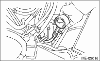

CAUTION:
After warming-up, engine becomes very hot. Be careful not to burn yourself at measurement.
1. After warming-up the engine, turn the ignition switch to OFF.
2. Make sure that the battery is fully charged.
3. Release the fuel pressure. 
4. Remove all the spark plugs.
5. Fully open the throttle valve.
6. Check the starter motor for satisfactory performance and operation.
7. Hold the compression gauge tightly against the spark plug hole.
NOTE:
When using a screw-in type compression gauge, the screw (put into cylinder head spark plug hole) should be less than 18 mm (0.71 in) long.
8. Crank the engine by means of the starter motor, and read the maximum value on the gauge when the pointer is steady.

9. Perform at least two measurements per cylinder, and make sure that the values are correct.
Compression (throttle full open):
DOHC Non-turbo model (200 rpm)
Standard:
1,100 — 1,300 kPa (11.2 — 13.3 kgf/cm2, 160 — 189 psi)
Service limit:
1,000 kPa (10 kgf/cm2, 142 psi)
Difference between cylinders:
49 kPa (0.5 kgf/cm2, 7 psi), or less
DOHC Turbo model (200 — 300 rpm)
Standard:
981 — 1,177 kPa (10 — 12 kgf/cm2, 142 — 171 psi)
Service limit:
882 kPa (9.0 kgf/cm2, 128 psi)
Difference between cylinders:
49 kPa (0.5 kgf/cm2, 7 psi), or less